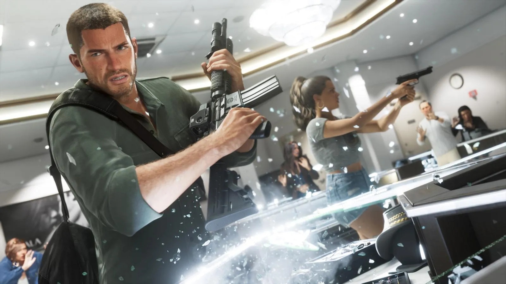

Издания и цены GTA 6: Standard, Ultimate и бонус предзаказа — что входит и стоит ли переплачивать
Опубликовано:

- Standard Edition — $79,99 (Турция — 3999 TL, Польша — 349 zł, еврозона — €79,99).
- Ultimate Edition — $99,99 (Турция — 4999 TL), только в цифре.
- Бонус всем, кто купит до 20 ноября: Vintage Vice City Pack — машина ’55 Vapid Stanier, гараж, ретро-одежда, раскраска оружия.
- Цифровой предзаказ даёт ещё месяц GTA+.
- Коробочное издание — код без диска.
Цены в разных странах
Rockstar объявила цены 25 июня 2026 года, когда открылись предзаказы: $79,99 за обычное издание и $99,99 за Ultimate. Это самая высокая стартовая цена в истории серии: GTA 5 в 2013 году стоила $59,99. В других странах цену задают магазины PlayStation и Microsoft с учётом налогов и курса.
| Регион | Standard | Ultimate |
|---|---|---|
| США | $79,99 | $99,99 |
| Великобритания | £69,99 | £89,99 |
| Еврозона (Германия, Испания, Италия…) | €79,99 | — |
| Польша | 349 zł | — |
| Турция | 3999 TL | 4999 TL |
| Япония | ¥9800 | — |
| Южная Корея | ₩89 800 | — |
«—» значит, что надёжной сводки по цене Ultimate в этой стране мы не нашли. В Турции цены одинаковые в PlayStation Store и Microsoft Store и с июня не менялись. В пересчёте на доллары самые дешёвые регионы — Южная Корея, Япония и Индия, самые дорогие — Израиль и Венгрия. Как покупают из России — Как купить GTA 6 в России: аккаунт другого региона, пополнение, цены и подводные камни.
Standard Edition
Это полная игра: весь сюжет Джейсона и Лусии, весь штат Леонида, все занятия и механики. Ничего «урезанного» в ней нет. Если купить её до 20 ноября, сверху добавится Vintage Vice City Pack, а при цифровой покупке — ещё месяц GTA+. Перейти на Ultimate можно когда угодно: апгрейд продаётся отдельно (цену Rockstar пока не назвала).
Ultimate Edition: все 10 бонусов
Ultimate — это игра плюс «Ultimate Edition Upgrade»: набор машин, оружия, одежды и мест, которые открываются по ходу сюжета. Продаётся только в цифровом виде — коробки Ultimate нет. По официальному списку Rockstar в набор входят:
- Багги ’67 Vapid Dominator и гараж Paradise в Watson Bay.
- Спорткар ’95 Grotti Cheetah.
- Машины для убежища Джейсона: мотоцикл Dinka Enduro и каяк Crest — или ретро-пикап Vapid Ganado с эксклюзивным тюнингом.
- Две тюнинг-мастерские: Rideout Customs в Вайс-Сити и One-Eyed Willie’s у озера Леонида.
- Коллекция классических машин — заказ от некоего Уаймана, четыре машины только для Ultimate.
- Катер Shitzu Squalo.
- Револьверы Hawk и Little Morgan — появятся в Ammu-Nation по ходу сюжета.
- Именные версии пистолетов Girardi ES9 и Klose K17.
- Отдельное задание: налёт на базу банды PTT Youngin$.
- Одежда и тату в стиле Вайс-Сити: бренд Goodtime Gear, магазин Stock 305, салон Sara’s Unisex Salon и тату-салон Electric Fang — больше 50 рисунков от художников FAILE.
Обратите внимание на детали: «Stock 305» — отсылка к телефонному коду Майами 305, а FAILE — реальный дуэт уличных художников из Бруклина.
Vintage Vice City Pack
Бонус для всех, кто оформил предзаказ или купит игру до 20 ноября 2026 — в любом издании. Пак посвящён старому Вайс-Сити 1980-х из GTA Vice City (2002):
- ’55 Vapid Stanier — классический седан 1955 года, ответ Rockstar на Cadillac того времени.
- Гараж Shore Court у Ocean Beach — с оружейным шкафом и точкой, где можно сдать краденое скупщику.
- Ретро-образы: для Джейсона — пастельный льняной костюм (привет Томми Версетти и сериалу «Полиция Майами»), для Лусии — красное мини-платье с пайетками и локоны.
- Тропическая раскраска с пальмами для большинства оружия.
Коробочные издания тоже дают пак — код в коробке открывает и игру, и бонус, пока есть запасы.
Месяц GTA+
GTA+ — платная подписка Rockstar. Сейчас она даёт бонусы в GTA Online для GTA 5 и доступ к библиотеке старых игр Rockstar. Месяц бесплатно получают только цифровые предзаказы в PlayStation Store и Microsoft Store. Код нужно активировать до срока, а потом подписка продлевается автоматически по обычной цене — если она не нужна, отключите автопродление.
Коробка и коллекционный набор
- Коробочное издание — только Standard, внутри код для загрузки, а не диск. В магазинах с 12 ноября. На вопрос о дисках Take-Two 9 ноября ответила, что это решение Rockstar.
- The Goodtime State – Vice City Collection за $399,99 — это набор сувениров без игры: фигурка аллигатора Макки, очки Oakley, кепка New Era, карта Леониды и другое. Подробно — Коллекционный набор GTA 6 The Goodtime State – Vice City Collection: что внутри за $399,99.
Стоит ли брать Ultimate
Решать вам, но вот факты. Ultimate не даёт ни раннего доступа, ни лишних сюжетных глав — только машины, оружие, места и одежду. Одно отдельное задание (налёт на PTT Youngin$) там есть. Если вы хотите собрать в игре всё — Ultimate удобен. Если важен сюжет — Standard даёт ту же историю, а апгрейд можно купить позже, когда станет понятна его цена. Vintage Vice City Pack при этом одинаковый в обоих изданиях.
- GTA 5 при выходе стоила $59,99, GTA 6 — $79,99: рост на треть за 13 лет.
- Grotti Cheetah — пародия на Ferrari Testarossa и появлялась ещё в GTA Vice City 2002 года.
- Vapid Stanier — «полицейский» седан серии: в GTA 4 и 5 это машина полиции, а в GTA 6 появилась ретро-версия 1955 года.
Частые вопросы
Сколько стоит GTA 6?
Standard — $79,99, Ultimate — $99,99; в Турции 3999 и 4999 TL.
Что даёт Ultimate Edition?
Машины, катер, гаражи, тюнинг-мастерские, револьверы, одежду, тату-салон и задание с налётом — 10 позиций.
Что такое Vintage Vice City Pack?
Бонус за покупку до 20 ноября: Vapid Stanier 1955 года, гараж, ретро-одежда и раскраска оружия.
Есть ли Ultimate на диске?
Нет, только в цифре. Коробка Standard — это код без диска.
Можно ли купить Ultimate позже?
Да, апгрейд продаётся отдельно.
Источники: Rockstar Newswire и Rockstar Support — «Grand Theft Auto VI: Platforms, Editions, and Versions», «Pre-Order Grand Theft Auto VI» (18.06 и 25.06.2026); PlayStation Store и Microsoft Store Турции (по сводкам Haberci TV, Endgame Tools, 10.2026); DonanımHaber — сравнение цен по странам; GTA Boss, GTABase — список Ultimate Edition и Vintage Vice City Pack; Variety, 09.11.2026.
Каждый день — одно сравнение: кадр игры рядом с реальным фото. Подписывайтесь:
YouTubeInstagramTikTok